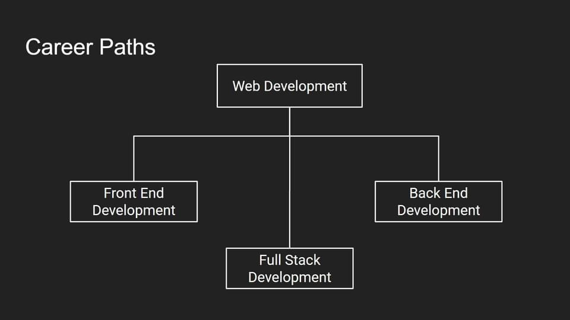

Front-End vs Back-End vs Full Stack
 What is a Front-End Developer?
The front end of a website is the part that users interact with. Everything that you
see
when you’re navigating around the Internet, from fonts and colors to dropdown menus and
sliders, is a combo of HTML, CSS, and JavaScript being controlled by your computer’s
browser.
Front-end developers are responsible for a website’s user-facing code and the architecture of its immersive user experiences. In order to execute those objectives, front-end devs must be adept at three main languages: HTML, CSS, and Javascript programming. In addition to fluency in these languages, front-end devs need to be familiar with frameworks like Bootstrap, Foundation, Backbone, AngularJS, and EmberJS, which ensure great-looking content no matter the device, and libraries like jQuery and LESS, which package code into a more useful, time-saving form. A lot of front-end developer job listings also call for experience with Ajax, a widely used technique for using Javascript that lets pages dynamically load by downloading server data in the background.
What is a Back-End Developer?
So what makes the front end of a website possible? Where is all that data stored? This is
where the back end comes in. The back end of a website consists of a server, an application,
and a database. A back-end developer builds and maintains the technology that powers those
components which, together, enable the user-facing side of the website to even exist in the
first place.
SKILLS AND TOOLS
In order to make the server, application, and database communicate with each other, back-end
devs use server-side languages like PHP, Ruby, Python, Java, and .Net to build an
application, and tools like MySQL, Oracle, and SQL Server to find, save, or change data and
serve it back to the user in front-end code. Job openings for back-end developers often also
call for experience with PHP frameworks like Zend, Symfony, and CakePHP; experience with
version control software like SVN, CVS, or Git; and experience with Linux as a development
and deployment system.
Back-end devs use these tools to create or contribute to web applications with clean,
portable, well-documented code. But before writing that code, they need to collaborate with
business stakeholders to understand their particular needs, then translate those into
technical requirements and come up with the most effective and efficient solution for
architecting the technology.